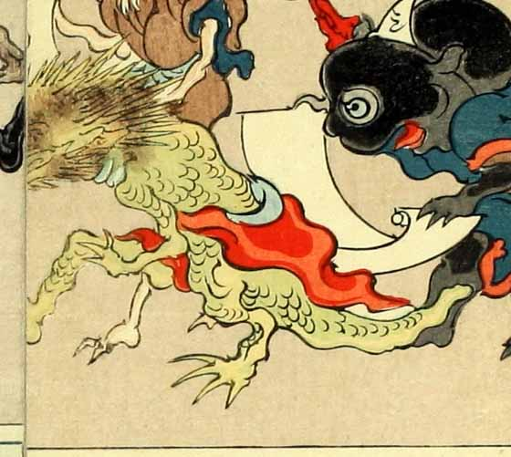

龍のような化物。頭部にはとがった毛のようなものが生えていて、体には蜥蜴のような鱗がある。手足には鋭い爪が生え、赤い布のようなものを体に巻いている。
著作者：洒落斎芳幾（歌川芳幾）／出典：親書誌：U426_nichibunken_0075：滑稽倭日史記；コッケイヤマトシキ／日付：2007／資源識別子：U426_nichibunken_0075_0028_0000
Copyright (c)2010- International Research Center for Japanese Studies, Kyoto, Japan. All rights reserved.